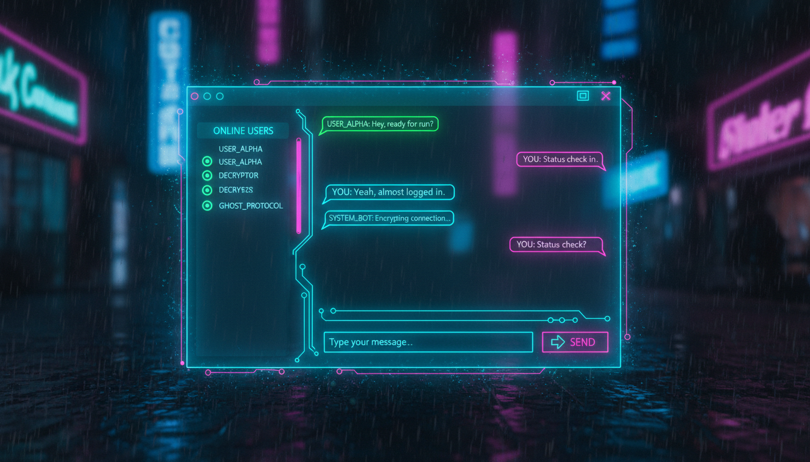

TCP/IP, сокети, сервер та клієнт, повідомлення

// ===== Сервер =====
public ref class ChatServerForm : public Form {
private:
TcpListener^ listener;
List<TcpClient^>^ clients;
TextBox^ txtLog;
Thread^ listenThread;
bool running = false;
public:
ChatServerForm() {
this->Text = "Chat Server";
this->Size = Size(500, 400);
txtLog = gcnew TextBox();
txtLog->Multiline = true;
txtLog->Dock = DockStyle::Fill;
txtLog->ReadOnly = true;
txtLog->ScrollBars = ScrollBars::Vertical;
this->Controls->Add(txtLog);
clients = gcnew List<TcpClient^>();
Button^ btnStart = gcnew Button();
btnStart->Text = "Запустити сервер";
btnStart->Dock = DockStyle::Bottom;
btnStart->Click += gcnew EventHandler(
this, &ChatServerForm::OnStart);
this->Controls->Add(btnStart);
}
void OnStart(Object^ s, EventArgs^ e) {
running = true;
listener = gcnew TcpListener(IPAddress::Any, 5000);
listener->Start();
Log("Сервер запущено на порту 5000");
listenThread = gcnew Thread(
gcnew ThreadStart(this, &ChatServerForm::Listen));
listenThread->IsBackground = true;
listenThread->Start();
}
void Listen() {
while (running) {
try {
TcpClient^ client = listener->AcceptTcpClient();
clients->Add(client);
Log("Клієнт підключився");
Thread^ clientThread = gcnew Thread(
gcnew ParameterizedThreadStart(
this, &ChatServerForm::HandleClient));
clientThread->IsBackground = true;
clientThread->Start(client);
} catch(...) {}
}
}
void HandleClient(Object^ obj) {
TcpClient^ client = (TcpClient^)obj;
NetworkStream^ stream = client->GetStream();
array<Byte>^ buffer = gcnew array<Byte>(1024);
while (running) {
try {
int bytes = stream->Read(buffer, 0, buffer->Length);
if (bytes > 0) {
String^ msg = Encoding::UTF8->GetString(buffer, 0, bytes);
Log("Отримано: " + msg);
Broadcast(msg, client);
}
} catch(...) { break; }
}
clients->Remove(client);
client->Close();
}
void Broadcast(String^ message, TcpClient^ sender) {
array<Byte>^ data = Encoding::UTF8->GetBytes(message);
for each(TcpClient^ client in clients) {
if (client != sender) {
try {
client->GetStream()->Write(data, 0, data->Length);
} catch(...) {}
}
}
}
void Log(String^ message) {
if (txtLog->InvokeRequired) {
txtLog->Invoke(gcnew Action<String^>(
this, &ChatServerForm::Log), message);
return;
}
txtLog->AppendText(DateTime::Now.ToString("HH:mm:ss")
+ " - " + message + "\r\n");
}
};
// ===== Клієнт =====
public ref class ChatClientForm : public Form {
private:
TcpClient^ client;
NetworkStream^ stream;
TextBox^ txtChat, ^txtInput;
Thread^ readThread;
public:
ChatClientForm() {
this->Text = "Chat Client";
this->Size = Size(500, 500);
txtChat = gcnew TextBox();
txtChat->Multiline = true;
txtChat->ReadOnly = true;
txtChat->ScrollBars = ScrollBars::Vertical;
txtChat->Dock = DockStyle::Fill;
this->Controls->Add(txtChat);
Panel^ panel = gcnew Panel();
panel->Dock = DockStyle::Bottom;
panel->Height = 40;
txtInput = gcnew TextBox();
txtInput->Location = Point(5, 8);
txtInput->Size = Size(380, 25);
txtInput->KeyDown += gcnew KeyEventHandler(
this, &ChatClientForm::OnKeyDown);
Button^ btnSend = gcnew Button();
btnSend->Text = "Надіслати";
btnSend->Location = Point(395, 7);
btnSend->Click += gcnew EventHandler(
this, &ChatClientForm::OnSend);
panel->Controls->Add(txtInput);
panel->Controls->Add(btnSend);
this->Controls->Add(panel);
Connect("127.0.0.1", 5000);
}
void Connect(String^ ip, int port) {
client = gcnew TcpClient();
client->Connect(ip, port);
stream = client->GetStream();
AddMessage("Підключено до сервера!");
readThread = gcnew Thread(
gcnew ThreadStart(this, &ChatClientForm::ReadMessages));
readThread->IsBackground = true;
readThread->Start();
}
void ReadMessages() {
array<Byte>^ buffer = gcnew array<Byte>(1024);
while (true) {
try {
int bytes = stream->Read(buffer, 0, buffer->Length);
if (bytes > 0) {
String^ msg = Encoding::UTF8->GetString(buffer, 0, bytes);
AddMessage(msg);
}
} catch(...) { break; }
}
}
void OnSend(Object^ s, EventArgs^ e) {
String^ msg = txtInput->Text;
if (msg->Length > 0) {
array<Byte>^ data = Encoding::UTF8->GetBytes(msg);
stream->Write(data, 0, data->Length);
txtInput->Clear();
}
}
void OnKeyDown(Object^ s, KeyEventArgs^ e) {
if (e->KeyCode == Keys::Enter) OnSend(s, e);
}
void AddMessage(String^ msg) {
if (txtChat->InvokeRequired) {
txtChat->Invoke(gcnew Action<String^>(
this, &ChatClientForm::AddMessage), msg);
return;
}
txtChat->AppendText(msg + "\r\n");
}
};